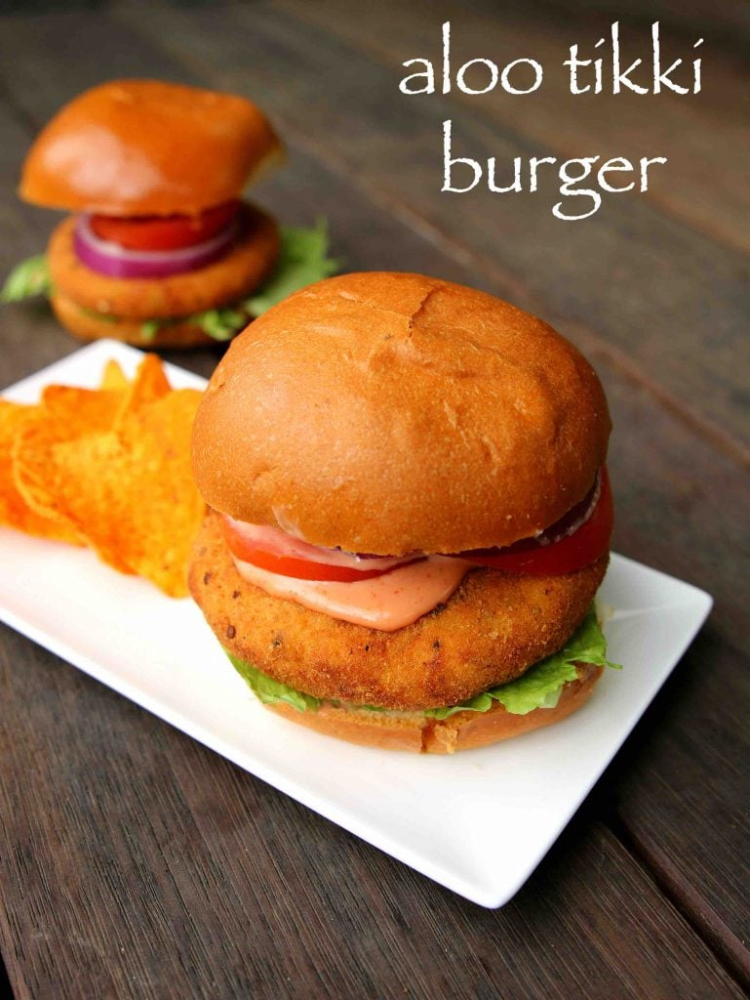
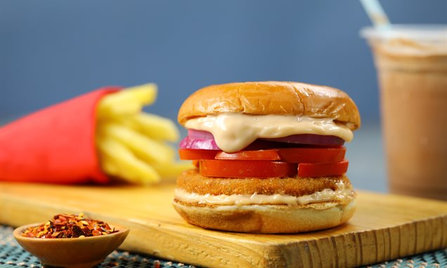

Aloo Tikki Burger Recipes
My Aloo Tikki Burger recipe is a home run! Crisp golden potato patties are sandwiched between burger buns and then topped with veggies and slathered with two chutneys for a handheld meal that is a fan favorite.

Ingredients
For aloo patties:
- 2 potatoes, boiled & mashed
- 1/4 cup peas / matar, boiled
- 1/4 tsp turmeric / haldi
- 1 cup bread crumbs
- 1/2 tsp kashmiri chilli powder
- 1/2 tsp coriander powder
- oil for deep frying
- 1/4 tsp cumin powder / jeera powder
- 1/4 tsp pepper, crushed
- salt to taste
- 1/2 tsp ginger garlic paste
- 1/4 cup thick poha / beaten rice / aval, washed
For maida paste:
- 3 tbsp maida / plain flour / all purpose flour
- 2 tbsp corn flour
- 1/4 tsp pepper, crushed
- 1/4 tsp salt
- 1/4 cup water
Other ingredients:
- 3 tbsp eggless mayonnaise
- 3 tbsp tomato sauce
- 1 tsp chilli sauce
- 4 burger bun
- few lettuce leaves
- 1 to mato, slice
- 1 onion, rings
Instructions and Steps of how to make::
-
Firstly, take 2 boiled and mashed potatoes, ¼ cup boiled peas and
spices.
- Combine everything and prepare patties.
- Dip into maida paste and roll in bread crumbs.
-
Deep fry in hot oil or bake at 180 degree celsius for 20 minutes or till
it turns golden and crisp.
-
Cut half the burger bun and spread a tsp of prepared burger sauce on
both sides.
-
On bottom side of bun place few lettuce followed by prepared aloo
patties.
- Again spread a tsp of burger sauce.
- Place 2 slice of tomato and 2 rings of onion.
- Cover with burger bun and press slightly.
Finally, serve aloo tikki burger with french fries or potato chips.

Go Back